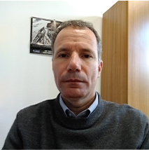

<div class="cd-schedule-modal__event-info">
	<div>
		
		<br>
		<h2 style="margin-top: auto">Descrição</h2>
		<span>
			A apresentação abordará os principais aspectos do desenvolvimento do primeiro satélite integralmente brasileiro, o Amazonia 1, destacando as tecnologias desenvolvidas, os desafios superados e ganhos, além das capacidades da Plataforma Multimissão (PMM).		<br>
		<br>
		<br>
		<div style="display:flex;  ">
			<div style="display:flex; align-items:center; width: 100%; flex-direction: column; justify-content: space-between;">
				<h2 >Palestrante</h2>
				
				<h3 >Adenilson Silva</h3>
				<span>
					Adenilson Roberto da Silva
					Possui graduação em Matemática pelo Centro de
					Desenvolvimento de Tecnologia e Recursos Humanos (1994),
					mestrado em Engenharia e Tecnologia Espaciais pelo INPE -
					Instituto Nacional de Pesquisas Espaciais (1997) e doutorado em
					Engenharia e Tecnologia Espaciais pelo INPE - Instituto Nacional
					de Pesquisas Espaciais / DLR - Deutsches Zentrum für Luft- und
					Raumfahrt (2001) (Alemanha). É tecnologista sênior
					do Instituto Nacional de Pesquisas Espaciais, exercendo a função
					de Coordenador do programa de satélites baseado na plataforma
					multi missão (PMM) desde 2011 e Chefe da Divisão de Sistemas Espaciais do INPE.
					Tem experiência no Gerenciamento de Projetos de Satélites e na área de Engenharia
					Aeroespacial, com ênfase em Análise de Missão, atuando
					principalmente nos seguintes temas: satélites artificiais, otimização, controle de sistemas,
					determinação de atitude e modelagem.
				</span>
			</div>
		</div>
	</div>
</div>